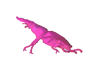
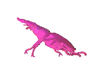

>“It’s nice that we had 15 years of usable internet before it devolved into a giant ad that’s not even good at selling you the stuff you need or want” —@nicodelort
The web is no longer for the people aka it is now a caterpillar that has metamorphosed into a butterfly, but presented in the way that it was in Spongebob where it was terrorizing everyone.
The web began as a simple caterpillar.
A creature without much going on besides that it needed to eat and grow to eventually become a beautiful butterfly.
To do so, it needed a chrysalis. The caterpillar needed to wiggle its way out of its top layer of skin and let that encase itself around it so that it may undergo the metamorphosis.
What came out of that chrysalis was not a beautiful butterfly.
To understand why the title says that the internet had ‘devolved’ I need to explain that the internet has had—or is having as of this moment—three phases:
The first phase is referred to as Web 1.0; the birth of the web. This is more or less the beginning of everything, the dawn of a new age referred to as the “Digital Revolution” by those that care about it (like me). Web 1.0 was where information was being collected to be distributed to those around us through the code known as Hypertext Markup Language (HTML), with the means of a ‘foundation’ we referred to as Hypertext Transfer Protocol (HTTP://, later on it becomes HTTPS://). During this time was also when people started to create their own personal sites as they began to learn how to utilize HTML to its fullest potential. We didn’t call people who could make sites web designers back then, we used to call them webmasters, because making a site was basically magic being performed in real life.
Some things that Web 1.0 gave us:
- Info that was easily accessible from a computer—just type in the address!
- Personal sites with multiple pages that let the user explore and see the digital space the webmaster crafted—these were referred to as ‘read-only’ sites.
- Lots of cool GIFs.
That’s kinda it, really. Web 1.0 was pretty simple with it, but it provided a new experience and a new way for people to express themselves, which was enough for the time.
So then 2004 came around and that’s when Web 2.0 started to show up; keeping up with the ‘birthing’ metaphor I started to use, I’ll say that Web 1.0 was an infant and Web 2.0 was the toddler that just learned how to walk. Web 2.0 was coined by Tim O'Reilly in 2004 during a conference “brainstorming session”, however the first recorded mention of this elusive Web 2.0 was in an article called Fragmented Future written by Darcy DiNucci and published in the Print Magazine in 1999—yeah, 1999. Darcy DiNucci had more or less predicted the way that the web was going to evolve all the way back in 1999 because of some specific factors that had been taking place at that time (Put a pin in that.)
Web 2.0 was comprised off of:
- An improvement upon the foundation of the web, where we are now able to “interact” more with one another—we call this ‘participatory web’.
- Introduced technologies that allow the web to be more accessible by those outside of the website's main region. This is done through avenues such as social media, and also generally through the usage of data being sent between the site and the user.
- This is also when the web became accessible through your phone, as Mobile Internet Access was becoming more popular around this time.
These are only a few of the things that Web 2.0 brought us, and as you can see it’s a huge upgrade from the likes of Web 1.0 which was very limited in what was possible with it. Now with Web 2.0 you could get the information you so desired relatively quickly without having to go searching through a huge dictionary of web addresses for specific information, amongst other things. To this day, we’re still utilizing Web 2.0 for our everyday internet browsing, though now it’s been changed quite a bit (Put a pin here as well.)
An important thing that needs to be noted in regards to Web 2.0 is how Tim O’Reilly himself defined it to be:
“Web 2.0 is the business revolution in the computer industry caused by the move to the internet as platform, and an attempt to understand the rules for success on that new platform. Chief among those rules is this: Build applications that harness network effects to get better the more people use them. (This is what I've elsewhere called "harnessing collective intelligence.")”
What O’Reilly’s saying is that Web 2.0 is supposed to change the way we utilize the internet all together, that it can become so much more if we build it up in a way where it adapts to the actions we take whilst using it—Data collection, basically. And through the accumulated data, websites (specifically in this case company websites like for example eBay and Amazon) could learn and adjust themselves to better accommodate their user-base. All in all, it’s a pretty nice idea; make the internet less of an “archival database” as it initially was created to be, and more user-friendly and engaging. Though, one of the most important things in what O'Reilly had said was the phrase: Business revolution—here's where things start to get tricky.
See, the development and adoption of Web 2.0 didn't exactly take forever to occur. Honestly, it only took a couple of months, because on February 24, 2004 Facebook was created and on August 19, 2004 Google released its initial public offering (IPO)—Basically, Google had decided to start selling bits of ownership of the company to the public; now you, dearest reader, could also have a piece of this search engine and become an owner of Google! (You don't actually own it, your name isn't really on it.)
There were, of course, more developments in 2004 that had led to the adoption of Web 2.0, however these were the two major ones that left an impact in the vein of a “business revolution”—because they were the ones that helped start it. As companies grew, the need for more accessibility to the internet became a priority, especially for advertisements; Web 2.0 was, as stated above, where mobile internet access was becoming more popular and a key component to the reach companies would have on the consumer. This was, of course, further pushed to the forefront with the release of the iPhone in 2007 alongside the Android-based phones later on. All of these things combined led to the evolution of Web 2.0 in the way we know it now; centralized basis of information (Google, YouTube, Wikipedia,…), social media sites (Facebook, Twitter, TikTok,…), and marketplace sites (Amazon, eBay, AliExpress,…)—again, there's so much more to it, but these are the most utilized aspects of the web overall, especially in the form of mobile apps.
As the years went by, Web 2.0 had gone through an intense, and staggering change based entirely upon the way the web was being managed by individuals in power. Most websites were sold to companies, which led to corporations having full control over every aspect of the site, and then this led to the user no longer having much control over what they wanted to engage with or how the website looked for them overall. Gone was the ability to create your own personalized profiles that were popularized by MySpace and in came the bland, simple and close to minimalistic design of Facebook which later became the base standard to the point that now all you get on any website was:
- A Profile Pic
- A Banner (if you're lucky)
- And a Bio
And that's it. This was one of the things that Darcy DiNucci was also talking about in Fragmented Future, where the web would be split and adjusted to such an extent that everything had to fit multiple screens no matter what and what better way to do that than through minimalistic design where only the essentials are seen? Yes, accessibility is of high importance in the grand scheme of all of this, but accessibility being provided in exchange for customizability and individuality is where the issue comes to lie in the end.
But alongside the removal of customization came the removal of choice. As I said, these companies and individuals had so much power over the website that they'd remove the ability for you to engage with the things you wanted to engage with. Tumblr was popular for the fact that the only things you saw on your dashboard was the content that you wanted to see because you specifically curated your experience—this didn't mean you couldn't go looking for more content, however it wasn't fed to you through an algorithm that learned about what you liked and didn't like. That’s where the mention of data collection comes back into focus, because by this point data became the new currency on the internet. Have you ever had a time where you looked up something randomly and suddenly every damn ad on a random website was featuring that specific item? That’s because your data—from the things you searched up on Google, to the things you bought off of Amazon, or simply from the websites you were visiting—was being collected so that it could be distributed all around simply to provide multiple other companies or individuals more ways to sell you something. You know that pop-up asking to allow access to your “cookies” and that you just click “accept all”? Yeah, that’s them asking for your data so they can show you targeted ads, amongst other things.
Data became the new currency on the internet—not for the user, but for the larger companies, and your privacy was now public knowledge no matter what you did.
That’s where Web 3.0 began to surface; as a means of going against corporations that no longer cared for the privacy of the consumer, a new form of the web was to be created for the sole purpose of giving people the anonymity they once had at the beginning of the internet’s existence back. Coined by the inventor of the World Wide Web good ol’ Sir Tim Berners-Lee, he proposed that the future of the internet should be “decentralized”—gone would be Facebook, Google, Twitter and Amazon (referred to as "Big Tech") which are continuously collecting our data and using it to further make money off of us and in would come a platform that would keep everything anonymous and unknown, so as to protect our own privacy overall. And this iteration of the internet would house Artificial Intelligence of such high caliber that it’d be considered a “global brain”, for it could process information both conceptually and contextually and provide it in the same way a human could.
Truly, this would have been insane.
Too bad this isn’t actually possible. See, technology isn’t at the point where we could feasibly do something like this, you know? AI is still an emerging form of technology, the caterpillar is still… a caterpillar. No matter what anyone says, it’s still going through the process of growing large enough before it can become a chrysalis and then to hatch into a butterfly. As such, the idea of Web 3.0 was more so left on the wayside with groups of people still researching on ways to actually make it real. It wasn’t exactly scrapped either, though. The concepts it brought up of decentralization and removing oneself from the confines of the control that Big Tech and, in general, capitalism held over an individual was very much an enticing and interesting new thing to work with. As such, Web 3.0 took on a new context, this context ending up being cryptocurrency and blockchains.
Let me talk about this real quick before I discuss our own relationships with the internet. Let’s call this quick chat... Side content.